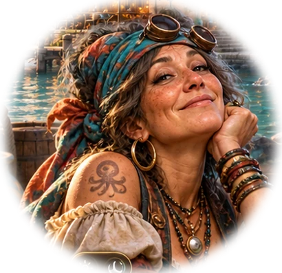

Le paysage vous ouvre le chemin…
La mer vous a conduit jusqu'ici. Le reste appartient à l'île.

MARIE JEANNE
Accueil du port · Porsa RotasAh ! Enfin quelqu'un ! Bienvenue sur Blacklace Island. Ne vous inquiétez pas pour le volcan… Il fait ça depuis des années.